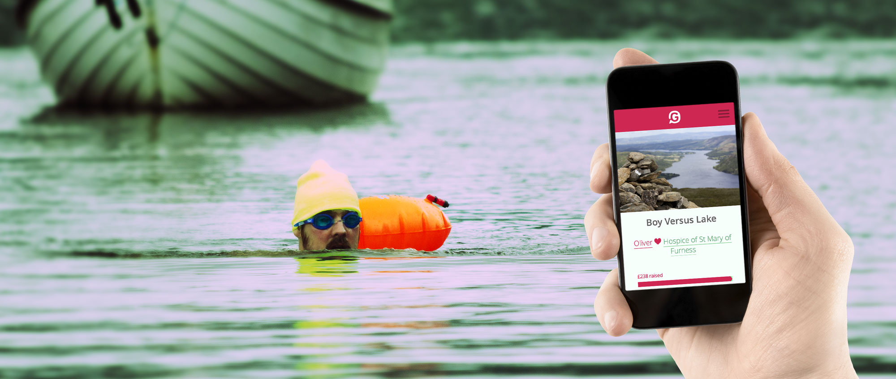

-
I've spent the past year as CCO of Givey. Givey is a donation platform which instead of taking commission or charging charities, makes money by creating chargeable value for businesses.

Read my Givey case study
-
I've been working with Herb Kim on a variety of brands over the past 4 years, including GameHorizon Conference and DIBI Web Conference. I've led the creation of all the primary digital assets. For his flagship brand, Thinking Digital, I was asked to come on board as a Creative Director.
Read my Thinking Digital case study
-
On the back of the success of the Thinking Digital website, I was invited to design the new website for TEDxLiverpool.
 Read my TEDxLiverpool case study
Read my TEDxLiverpool case study
 Menu
Menu